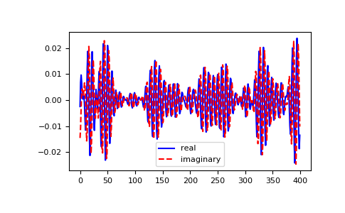

numpy.fft.ifft¶
-
numpy.fft.ifft(a, n=None, axis=-1, norm=None)[source]¶ Compute the one-dimensional inverse discrete Fourier Transform.
This function computes the inverse of the one-dimensional n-point discrete Fourier transform computed by
fft. In other words,ifft(fft(a)) == ato within numerical accuracy. For a general description of the algorithm and definitions, seenumpy.fft.The input should be ordered in the same way as is returned by
fft, i.e.,a[0]should contain the zero frequency term,a[1:n//2]should contain the positive-frequency terms,a[n//2 + 1:]should contain the negative-frequency terms, in increasing order starting from the most negative frequency.
For an even number of input points,
A[n//2]represents the sum of the values at the positive and negative Nyquist frequencies, as the two are aliased together. Seenumpy.fftfor details.- Parameters
- aarray_like
Input array, can be complex.
- nint, optional
Length of the transformed axis of the output. If n is smaller than the length of the input, the input is cropped. If it is larger, the input is padded with zeros. If n is not given, the length of the input along the axis specified by axis is used. See notes about padding issues.
- axisint, optional
Axis over which to compute the inverse DFT. If not given, the last axis is used.
- norm{None, “ortho”}, optional
New in version 1.10.0.
Normalization mode (see
numpy.fft). Default is None.
- Returns
- outcomplex ndarray
The truncated or zero-padded input, transformed along the axis indicated by axis, or the last one if axis is not specified.
- Raises
- IndexError
If axes is larger than the last axis of a.
See also
Notes
If the input parameter n is larger than the size of the input, the input is padded by appending zeros at the end. Even though this is the common approach, it might lead to surprising results. If a different padding is desired, it must be performed before calling
ifft.Examples
>>> np.fft.ifft([0, 4, 0, 0]) array([ 1.+0.j, 0.+1.j, -1.+0.j, 0.-1.j])
Create and plot a band-limited signal with random phases:
>>> import matplotlib.pyplot as plt >>> t = np.arange(400) >>> n = np.zeros((400,), dtype=complex) >>> n[40:60] = np.exp(1j*np.random.uniform(0, 2*np.pi, (20,))) >>> s = np.fft.ifft(n) >>> plt.plot(t, s.real, 'b-', t, s.imag, 'r--') ... >>> plt.legend(('real', 'imaginary')) ... >>> plt.show()
